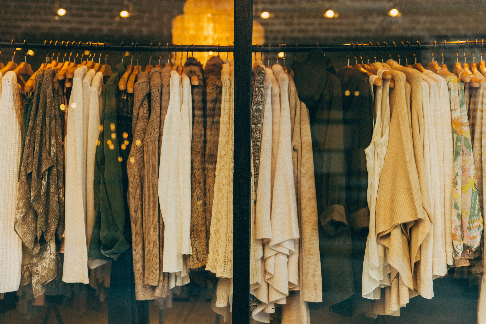

Outfitter for All Seasons!
In this page, I use jQuery which is a JavaScript library (alternative of JavaScript, in other words, a short version) to let the user pick any season and it will direct you to the page and show you seasonal outfits. Enjoy each season!
How our clothes influence our perfoming? It influences a lot and because of that it is necessary to choose the appropiate outfit. In fact, outfits can influence our mood and it is important to always keep it mind. Many people hesitate on wearing outfit based on the season. A lot of people give up in trying new things but in reality, having a good outfit can really affect your mental health and overall happiness. For example, whenever I am at home all day, I want to go outside. Because of that, I do my best to wear nice clothes because that is what I feel inside. People can only see what is external and if I take care of myself and wear nice outfit, people will see that I care for myself. 
This article from "Science People" gives more details the importance of wearing and feeling good: "The type of clothes you wear – and the kinds of accessories you use to either jazz them up or tone them down – says a lot about who you are, where you’re from, what you do and how you feel about yourself and others. In fact, dress scholars Mary Ellen Roach and Joanne Eicher, find that dress is one of the main ways we send social signals because what we wear shows our identity. What you wear — or dress, as Roach and Eicher define it — sends nonverbal cues to other people".
Overall, it is important to always consider yourself and check within yourself how are you feeling today because at the end of the day what matters is how we feel. For some people, style in outfit can be a struggle and it is okay. Clothes are not meant for others to see but for yourself. Whenever you think you are feeling down because of your clothes, remind yourself what matters here is that you feel and other people does not matter. So I will encourage you to keep going and keep shining because this world is happy to have you. Thank you for reading so far.